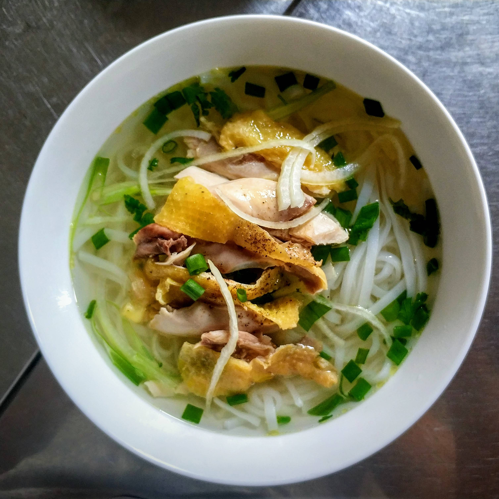

How to Make Homemade Pho (Authentic)

Description
Craving warm, comforting pho? Well, then let us introduce you to the tastiest pho recipe on the internet. The key to this authentic Vietnamese soup is the flavorful broth that simmers for at least six hours before serving over rice noodles.
We promise, this soup is so worth the wait.
What is Pho?
Pho is a soup consisting of bone broth, rice noodles, thinly-sliced meat (in this recipe, it's beef),
and fresh garnishes.
Ingredients
- Beef Soup Bones
- Rice Noodles
- Beef
- Fish Sauce
- Onion
- Spices and Seasonings
- Garnishes
Steps
- Roast the beef bones and onions until the bones are
browned and the onions are soft.
- Combine roasted beef bones, roasted onions, ginger, salt, star anise, fish sauce,
and water in a large stockpot. Allow to simmer for 6 to 10 hours.
Then, strain the broth into a new saucepan.
- Soak the rice noodles for an hour
- Cook the rice noodles in boiling water. Drain and add noodles to a bowl topped with sirloin,
cilantro, green onion, and broth. Garnish with your desired toppings.